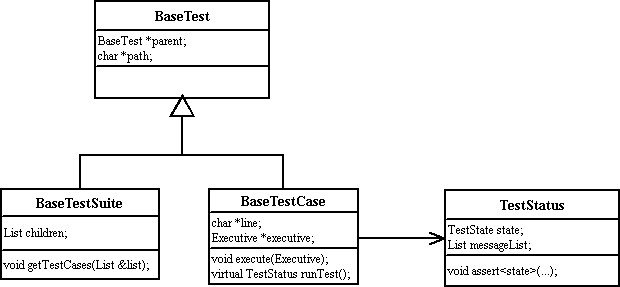
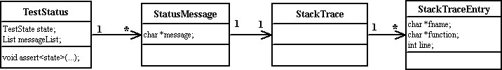
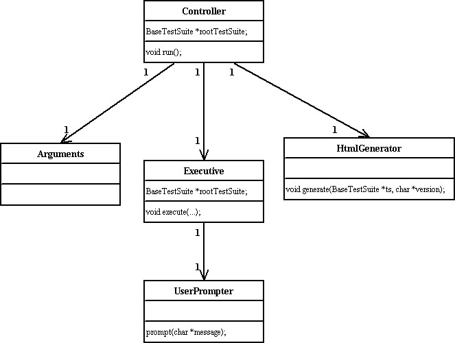

The Base Test Framework is a generic infrastructure for creating test suites.
All test suites and test cases are derived from BaseTestSuite and
BaseTestCase, respectively. Test suites maintain a list of child tests.
These child tests are either other test suites or test cases, but cannot be
a mixture of the two. In simple terms, a full test suite is organized as a
tree. The root node and the interior nodes of the tree are test suites.
The leaf nodes are test cases.
After a test case has been executed, it stores the result in a TestStatus.
The following shows the class diagram for tests.

As mentioned above, each test case maintains the results of its execution in a TestStatus.
The below figure shows the class diagram for the TestStatus. As can be seen, a TestStatus
consist of a state (UNKNOWN, PASS, FAIL, NOT_SUPPORT, ERROR, BLOCK) and an optional set of messages.
The messages are typically used to indicate the reason for an error or a failure. Each message
consists of a string and a stack trace. The stack trace indicates where in the source code that the error
or failure occurred. The stack trace consists of one or more StackTraceEntrys. Each stack trace
entry consists of the source code filename, function name, and line number.

The Controller is responsible for what action to take when the test application is
run, based upon the command line options. For example, it may be necessary to execute the
test cases or to create a set of web pages documenting the test cases. The following figure
shows the class diagram for the Controller.

The Arguments class is responsible for parsing the command line arguments.
The HtmlGenerator is used by the Controller when it is necessary to generate
the set of web pages.
The Executive is used by the Controller when it is necessary to execute
one or more test cases. The Controller provides the Executive with the
information from the command line arguments as to the names of which test cases to run
and which to exclude. The Executive works by obtaining a list of all of the test
cases from the root test suite, i.e. the test suite tree is recursively traversed to
obtain all of the test cases at the leafs of the tree. Based upon the names given by
the Controller, the Executive executes those test cases.
During execution of a test case, the test case can reference the Executive. In this
way, test cases can make use of the UserPrompter. The UserPrompter simply
prints a message for the user and waits for that user to press the Enter key.
The following are some other classes that make up the Base Test Framework.
AppExit is used to terminate the test application when a fatal block occurs.
A fatal block occurs when a test case does not teminate within the specified timeout period.
A message is printed indicating the offending test case and with some possible reasons as
to why this has occurred. Corrective action is required by the user.HtmlToc is used to build the table of contents, i.e. the set of hyperlinks on
left side of the web page showing the test suites.LocationMgr is used to maintain which location that is being tested. This
is a very abstract concept. In terms of HPI, a location may be a domain, a resource, or an
rdr entry. The LocationMgr mantains a stack in order to keep track of which location
is being tested. For example, a resource might be identified as follows: [Domain:1; Resource:3].
When a message is added to a TestStatus, the current location is appended to the
message.
Properties is used to maintain the runtime properties, such as the timeout period
for test cases.Report is simply a set of text messages that are appended together. For an example
of its use, consider the comparison of two HPI structures. For each field that is different, a
text message can be added to the Report. A final big string can then be obtained from the
Report.
Summary is used to keep track of the total number of passed test cases, failed test
cases, etc..